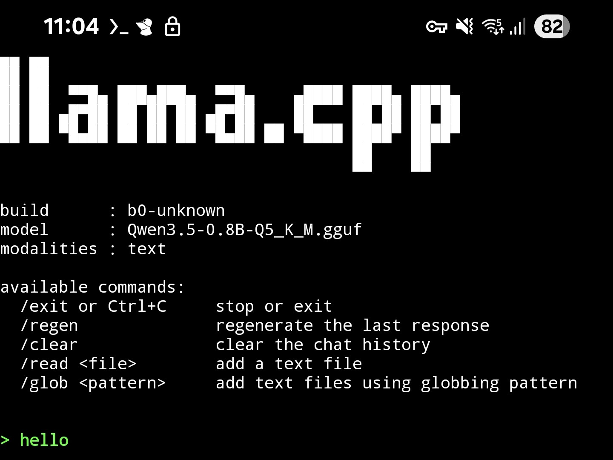
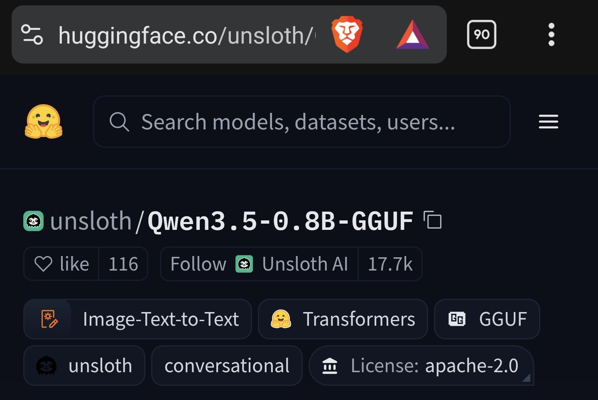
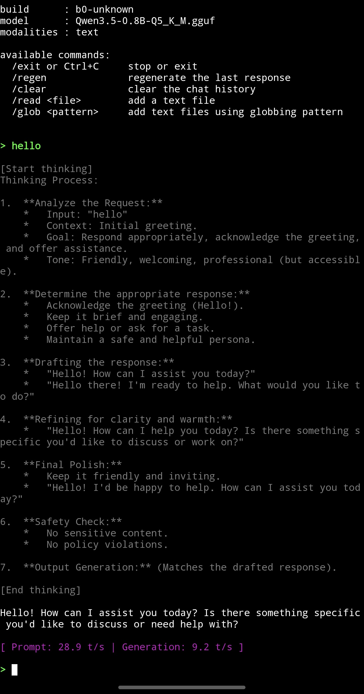
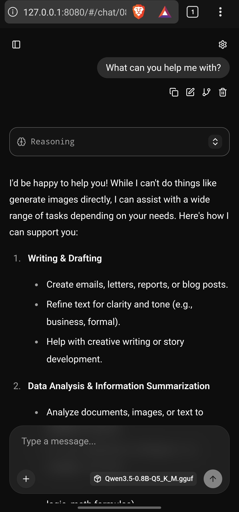
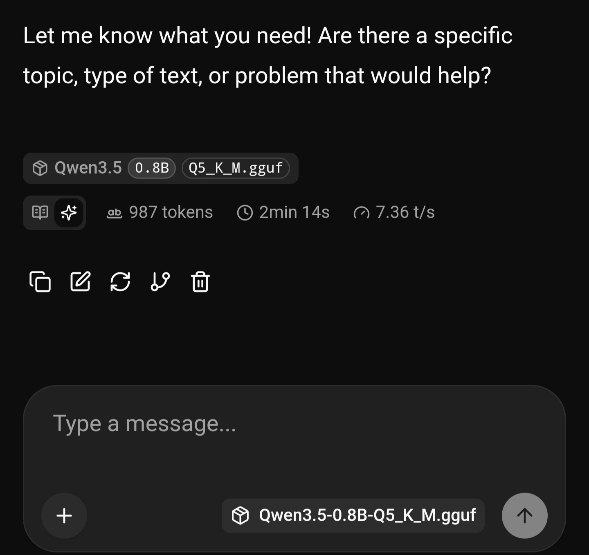

Running a local LLM on Android with Termux and llama.cpp
In this post I want to show how I ran a local LLM on my Samsung S21 Ultra with Android 15 and OneUI7.0 using the app Termux, llama.cpp tools, and an open sourced LLM.

Why I tried this
tldr: I like running local LLMs on the PC and wanted to try it on my phone
me yapping:
Maybe I should start out by mentioning that I have high regards for online privacy and want to become more conscious about how I browse the web and the personal information I share. Although, I am very impressed by LLMs that are distributed by frontier model providers, I'm thinking how the users also represent a pool of data for further training of closed source models and data mining.
The fact that we can get comfortable using closed source LLMs and send very personal thoughts and prompts to the cloud for inference had me think more thoroughly, if I should really send certain prompts. Even though providers offer opt-outs for training a model on your conversations, I am still sceptical.
My fascination of using LLMs grew, and not long ago, I've stumbled upon the r/localLLaMA reddit community, which is a great place if you want to be informed about the latest model releases and see interesting home labs, setups and projects that people are working on. Further, it is a good place if you want to discuss LLMs and compare setups, parameter settings and learn new things about this fun hobby.
Since I have a somewhat decent desktop PC, I had the hardware to potentially run basic local models. After first trying out ollama+OpenWebUI and later LM Studio, I was excited. Text inference on my own hardware, even if I turn off the WiFi, was fun to experience.
Not much later I found out about llama.cpp-server and llama.cpp-CLI, which offer a more lightweight UI and, in my basic testing, higher tokens per second (TPS) without having to rely on wrappers of the aforementioned approaches. The downside of this route is, it does come with a slightly higher learning curve and requires more time to set up, compared to LM Studio for example.
Later, seeing how models ran well on my desktop PC and laptop, I was curious to find if my phone could load a model generate text. A common app I saw recommended was "Pocketpal" from Google Play Store, which I installed and tried and it worked pretty well and had a nice UI. However, I was curious to see if there were other approaches to this.
Before that thought occurred, I had already installed an app called "Termux", also from Google Play Store. Termux is a terminal emulator app for Android. On non-rooted Android, it cannot execute certain system calls and operates within a restricted environment. In my case my phone is not rooted, but still it was fun to be able to use the certain linux CLI commands, as known from desktop on the phone.
I've seen Termux used in many ways, one being to use it to host a Minecraft server on a phone, serving to players connected to the same local network, which I have tried and it did work. So I was thinking, if I can use these linux commands on my PC to run local models, maybe it could also work on my phone. That's the reason why I attempted this.
What I used
- Samsung S21 Ultra
- Termux
llama-cpp-clillama-cpp-server- Qwen3.5-0.8B with Q5_K_M quantization from huggingface.co
- (Bonsai-8B-GGUF-1bit from huggingface.co, although this is a newer model and required a different setup, which I might write about at a later time)
Installation
I installed the needed tools in Termux:
pkg update && pkg upgrade -y
pkg install llama-cpp -y
Downloading a model
I downloaded a GGUF model in the browser and saved it to my device. Then I opened the download folder shortcut in the browser, selected the GGUF file -> open with: Termux Now the file is accessible in Termux.

Running it in the terminal
After that, I loaded the model and started chatting through the command line.
llama-cli -m /path/to/model.gguf
Running it in the browser
I also tried to run the model in llama-server, which gives a more readable UI in your web browser. To do this, run the below command to start a local server and open it in the browser by writing localhost:8080 or 127.0.0.1:8080 in the address bar.
llama-server -m /path/to/model.ggufWith the previous command I had only achieved 3-4 TPS, so just by adding the parameter "-t 6", which dedicates 6 threads of the CPU, increased it to 7-8 TPS. This is to show that there is potential to increase generation speed with various parameters.
llama-server -m /path/to/model.gguf -t 6

Conclusion
Running an open source LLM on my phone like this was a fun experience, especially considering it is a 2021 device, so newer phones should often offer an even more enjoyable experience.
This is by no means a guide on how to do it best, as I have done only surface level testing. There are various parameters that can be adjusted, depending on your device, to increase TPS and achieve a more optimal setup.
Maybe this has motivated you to try this on your phone and I hope you find some of this helpful!